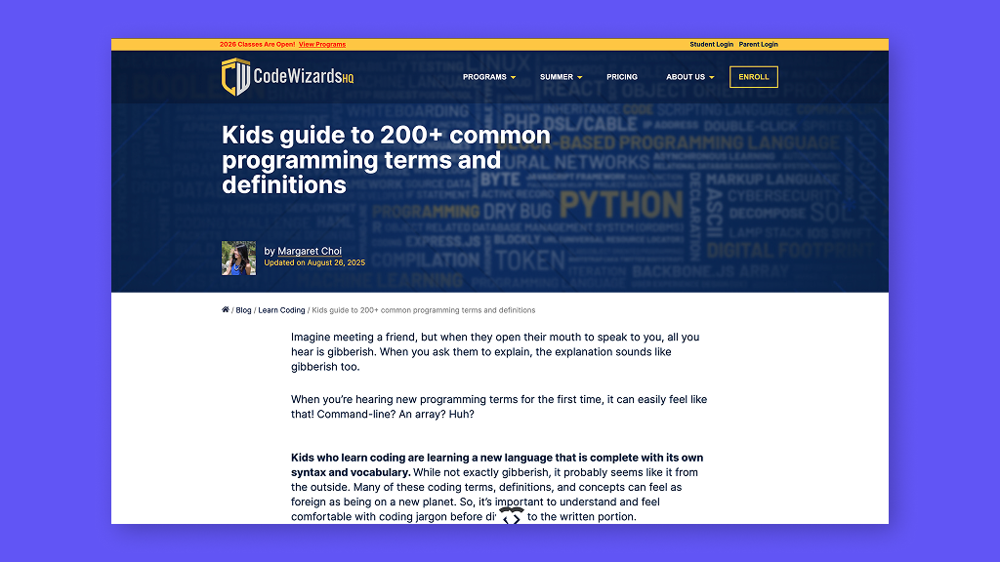
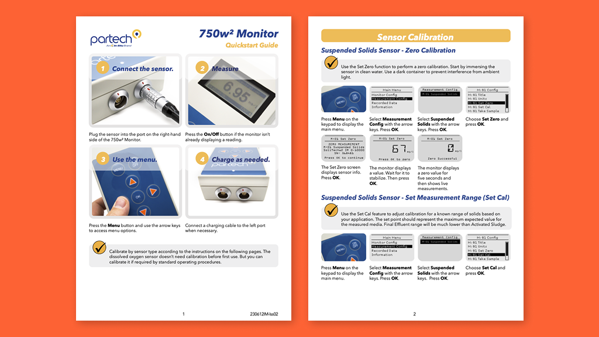

Work samples
See some of my articles, documentation, manuals, tutorials, and work instructions.
Articles
CodeWizardsHQ offers online courses that help kids learn to code. I developed this glossary to help their students understand coding terms.

Read it
For two years, I wrote how-to articles and developed online courses for Popular Woodworking. You can see all this great content on my author page.

Read it
Courses and tutorials
Stay tuned!
Documentation
Stay tuned!
Instruction manuals & user guides
I’ve produced hundreds of instruction manuals, quick-start guides, and other materials for water-monitoring instruments and software.

Read it
I created dozens of instruction sheets for Yonico router bits.

Read it
Work instructions
Stay tuned!